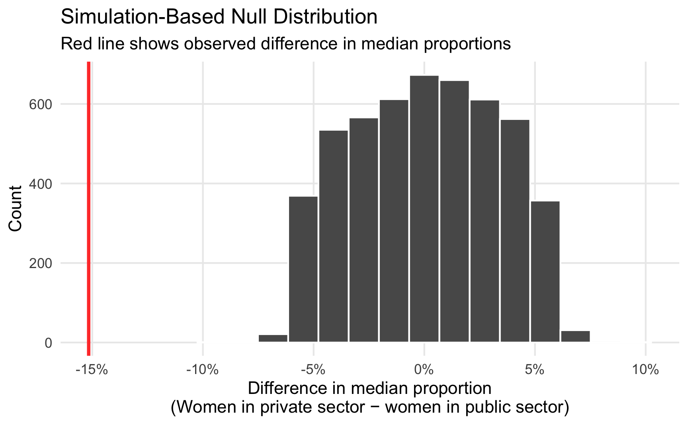

![]()
# Load libraries
library(tidyverse)
library(ggridges)
library(scales)
library(infer)
set.seed(1234) # Make all random draws reproducible
# https://datacatalog.worldbank.org/dataset/worldwide-bureaucracy-indicators
wwbi <- read_csv("WWBIData.csv")
# Create a list of indicators we want to work with
indicators <- c(
"BI.PWK.PRVS.FE.ZS", # females as share of private paid employees
"BI.PWK.PUBS.FE.ZS" # females as share of public paid employees
)
# Make a small, cleaner subset of the WWBI data
wwbi_small <- wwbi %>%
# Only select the columns we care about
select(country = `Country Name`, country_code = `Country Code`,
indicator = `Indicator Code`, starts_with("20")) %>%
# Keep only the indicators we care about
filter(indicator %in% indicators) %>%
# Gather all the year-based columns into two long columns
gather(year, value, starts_with("20")) %>%
# Spread the data back out so that there are columns for each indicator
spread(indicator, value) %>%
# Make these indicator names human readable
rename(share_female_private = `BI.PWK.PRVS.FE.ZS`,
share_female_public = `BI.PWK.PUBS.FE.ZS`) %>%
# Amid all the gathering and spreading, every column has become a character.
# This converts the year and all the share_* variables back to numbers
mutate_at(vars(year, starts_with("share")), as.numeric)
wwbi_2012 <- wwbi_small %>%
filter(year == 2012) %>%
# Get rid of rows that are missing data in the share_* columns
drop_na(starts_with("share")) %>%
# Make this tidy and long, with a column for private or public
gather(sector, proportion, starts_with("share")) %>%
# Make these values even nicer
mutate(sector = recode(sector,
share_female_private = "Women in private sector",
share_female_public = "Women in public sector"))This semester, I used the new ModernDive textbook to teach introductory statistics for executive MPA students at BYU, and it’s been absolutely delightful. The book’s approach to teaching statistics follows a growing trend (led by Mine Çetinkaya-Rundel, Alison Hill, and others) of emphasizing data and simulations instead of classical probability theory and complex statistical tests.
Where this approach really shines is with hypothesis testing. This is the core of inferential statistics, but it’s really hard for students to wrap their head around how to reject null hypotheses and interpret p-values. Even seasoned scientists struggle with explaining what p-values mean. This stuff is hard.
ModernDive borrows from Allen Downey’s philosophy that there is only one statistical test and that at their core, all statistical tests (be they t-tests, chi-squared tests, signed Wilcoxon rank tests, etc.) follow the same universal pattern:
- Step 1: Calculate a sample statistic, or \(\delta\). This is the main measure you care about: the difference in means, the average, the median, the proportion, the difference in proportions, the chi-squared value, etc.
- Step 2: Use simulation to invent a world where \(\delta\) is null. Simulate what the world would look like if there was no difference between two groups, or if there was no difference in proportions, or where the average value is a specific number.
- Step 3: Look at \(\delta\) in the null world. Put the sample statistic in the null world and see if it fits well.
- Step 4: Calculate the probability that \(\delta\) could exist in null world. This is the p-value, or the probability that you’d see a \(\delta\) at least that high in a world where there’s no difference.
- Step 5: Decide if \(\delta\) is statistically significant. Choose some evidentiary standard or threshold for deciding if there’s sufficient proof for rejecting the null world. Standard thresholds (from least to most rigorous) are 0.1, 0.05, and 0.01.
That’s all. Five steps. No need to follow complicated flowcharts to select the best and most appropriate statistical test. No need to run a bunch of tests to see if you need to pool variances or leave them separate. Calculate a number, simulate a null world, and decide if that number is significantly different from what is typically seen in the null world. Voila!
The infer package in R makes this process explicit, easy, and intuitive.
In December 2018 (just two days ago!), the World Bank announced a new Worldwide Bureaucracy Indicators Database, with dozens of measures of public sector effectiveness. The data includes variables that measure the proportion of women employed in both the private and the public sectors. Is there a difference between these two sectors? Do more women work in the public sector than the private sector? Instead of consulting a flow chart to find the right test that meets our assumptions and data limitations, we just simulate our way to a p-value and test to see if the difference in median proportions in each sector is significantly different from zero.
We first download a CSV of the WWBI data from the World Bank. In its raw form, it’s kind of a mess, with a row for each indicator in each country (so Afghanistan has a row for women private sector employment, one for women public sector employment, and so on), and columns for each year. This heavily commented code will load and clean and rearrange the WWBI data into something we can analyze and plot.
First, we’ll use a ridge plot (or overlapping density plots) to see if there’s a difference in the distribution of employment across these two sectors. We include quantile_lines = TRUE and quantiles = 2 to draw the median of each distribution.
ggplot(wwbi_2012, aes(x = proportion, y = sector, fill = sector)) +
stat_density_ridges(quantile_lines = TRUE, quantiles = 2, scale = 3, color = "white") +
scale_fill_manual(values = c("#98823c", "#9a5ea1"), guide = "none") +
scale_x_continuous(labels = percent_format(accuracy = 1)) +
labs(x = "Percent of women employed in the sector", y = NULL) +
theme_minimal() +
theme(panel.grid.minor = element_blank())
## Warning: Using the `size` aesthetic with geom_segment was deprecated in ggplot2 3.4.0.
## ℹ Please use the `linewidth` aesthetic instead.
It looks like there’s a difference here—the median percent of women in the public sector looks like it’s between 40–50%, while the median percent of women in the private sector is 50ish%.
We can use the infer package to determine the exact difference in the medians of these distributions. We use a formula in specify() to indicate which variables we want to be our response (or y) and which we want to be our explanatory (or x) variables, and then we calculate() the difference in median values. The order argument tells infer to subtract the public values from the private values.
diff_prop <- wwbi_2012 %>%
specify(proportion ~ sector) %>%
calculate("diff in medians",
order = c("Women in private sector", "Women in public sector"))
diff_prop
## Response: proportion (numeric)
## Explanatory: sector (factor)
## # A tibble: 1 × 1
## stat
## <dbl>
## 1 -0.152The difference in the median proportions here is 15.2%. More women appear to be employed in the public sector. But because of sampling issues, is there a possibility that this 15% difference could potentially be zero? Could it be positive instead of negative?
To test this, we simulate a world where the actual difference in medians between these two sectors is zero. We then plot that null distribution, place the observed 15.2% difference in it, and see how well it fits. Here we follow the same specify() %>% calculate() pattern, but introduce two new steps. We first hypothesize() that the two sectors are independent of each other and that there’s no difference between the two. We then generate() a null distribution based on permutation (essentially shuffling the private/public labels within the existing data 5,000 times), and then calculate the difference in medians for the two groups.
pub_private_null <- wwbi_2012 %>%
specify(proportion ~ sector) %>%
hypothesize(null = "independence") %>%
generate(reps = 5000, type = "permute") %>%
calculate("diff in medians",
order = c("Women in private sector", "Women in public sector"))
# Conveniently, the visualize() function that comes with infer returns a ggplot
# object, so we can continue to add ggplot layers to enhance and clean the plot
pub_private_null %>%
visualize() +
geom_vline(xintercept = diff_prop$stat, color = "#FF4136", linewidth = 1) +
labs(x = "Difference in median proportion\n(Women in private sector − women in public sector)",
y = "Count",
subtitle = "Red line shows observed difference in median proportions") +
scale_x_continuous(labels = percent_format(accuracy = 1)) +
theme_minimal() +
theme(panel.grid.minor = element_blank())
This red line is pretty far in the left tail of the distribution and seems atypical. We can calculate the probability of seeing a difference as big as 15.2% with the get_pvalue() function. Because we care about differences in means or medians (and because the difference could be positive if we flipped the order of subtracting the two groups—public−private instead of private−public), we specify direction = "both" to get a two-tailed p-value.
pub_private_null %>%
get_pvalue(obs_stat = diff_prop, direction = "both")
## Warning: Please be cautious in reporting a p-value of 0. This result is an approximation
## based on the number of `reps` chosen in the `generate()` step. See `?get_p_value()` for
## more information.
## # A tibble: 1 × 1
## p_value
## <dbl>
## 1 0The p-value is basically 0 (it’s not actually 0—it’s something like 0.0000001—but because it is based on simulations, it’ll report 0 and R will show a warning), which means that there’s a 0% chance of seeing a difference at least as large as 15.2% in a world where there’s no difference. That’s pretty strong evidence, and I’d feel confident declaring that there’s a statistically significant difference between sectoral employment patterns for women, with more women working in public sector jobs than in the private sector.
And that’s it! No flow charts. No complex assumption checking. Using the infer package in R, we brute forced-ly simulated our way to a p-value that is actually interpretable, and now we know that women tend to work in the public sector more than in the private sector. Magic!